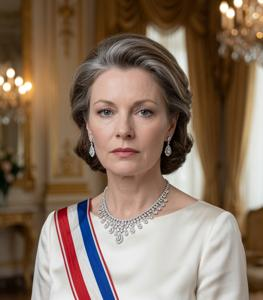
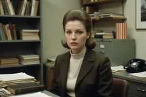
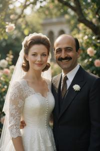
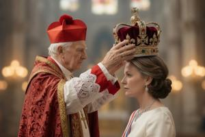

Queen Ljudmila
{kind=link}

Ljudmila Droganova Glovacz (Zgurian; Deglian: Lüdmila Droganova Glovač; Glagolitic: ⰎⰣⰄⰏⰊⰎⰀ ⰄⰓⰑⰃⰀⰐⰑⰂⰀ ⰃⰎⰑⰂⰀⰝ) (June 10, 1941 – September 17, 1994) was the only child of Queen Adele and the last claimant to the Pannonian throne. Born in wartime London and raised in New York by a Pannonian immigrant family, she spent most of her early life distancing herself from her dynastic inheritance before becoming, in middle age, an active figure in international advocacy on Pannonian human rights.
Through the Queen Ljudmila Foundation, established in 1966 and financed substantially by her husband Zograbe Sarquissian, she coordinated émigré opposition activity, supported Pannonian dissidents, and survived four assassination attempts over two decades. After the collapse of the Communist regime in 1990, she returned to Upper Pannonia and, during the subsequent civil war, backed a proposal to restore the constitutional monarchy as a framework for peace. She was crowned Queen at the Cathedral of SS. Cyril and Methodius in Vronovica on 17 September 1994 and was shot dead during the ceremony.
Origins and early life (1941–1952)
Ljudmila was born in London on June 10, 1941, officially as the posthumous daughter of King Drogan I. The record places the birth nine months after the King's assassination in September 1940; rumors attributing paternity to Randall Massey — Queen Adele's English secretary and probable British intelligence officer — were never officially addressed.
After Queen Adele's death in September 1952, the émigré community proclaimed the eleven-year-old Ljudmila Queen in exile. The Regent Council — a committee of five former officials managing the dynasty's legal affairs — arranged her transfer to the United States, where the Pannonian community was larger and the FBI agreed to provide protection against possible NOON assassination attempts.
In New York (1952–1959)
Ljudmila was adopted by Joshua Baumgarten, a distant maternal relative, whose parents had emigrated from Austria-Hungary in the early twentieth century. Joshua owned a fabric wholesale business in Queens; his wife Linda taught secondary school mathematics. They loved their adopted daughter, cared for her and never missed a chance to boast: "You know, our sweet Mila is the Queen of Upper Pannonia. Not kidding."
Ljudmila attended the Brearley School on a scholarship arranged by the émigré community. The FBI kept watch throughout the decade. Ljudmila noticed the surveillance early on, accepted the official explanation that it was for her own protection, and came to take it for granted.
The Pannonian émigré community organized around the Regent Council's American branch and several cultural associations. They needed Ljudmila as a symbolic center. In time the role grew wearisome. Sunday visits to Pannonian clubs, with the anthem and speeches about liberating the homeland, were things she later described as "a boring, pointless show where you'd been handed someone else's part by some stupid mistake." Yet for all that she insisted on being called nothing but Mila Baumgarten, Ljudmila never shirked her royal duties: "It's a pretty modest price to pay for everything those people did for me."
Yale and public declarations (1959–1963)
Mila was admitted to Yale in 1959 to read English literature. At Yale she avoided Eastern European student associations and declined invitations to speak on Pannonian affairs from groups of both left and right. She contributed reviews to a student literary magazine. Her position, stated to that magazine in early 1959, was unambiguous:
I'm tired of this Disney fairytale bullshit about kings and princesses. My official biological father was a Fascist dictator, and my Mom hated him. Not the kind of legacy to be proud of. Am I a Pannonian? Yep. Am I a Queen of Pannonia? Nope.
She added that Gowbka's regime had strong popular support and the whole royalist movement was pointless and hopeless. The Regent Council issued a notice that Her Majesty's views did not represent those of the legitimate government.
The People's Republic was delighted. In 1960, Miljana Gowbka — wife of the Supreme Leader — wrote Mila a personal letter offering a Category I apartment in Sockostur, a seat in the Legislative Assembly, and a New University professor position, on condition of formal abdication. Mila refused even a visit: "Sorry, I don't want to be a propaganda asset." She explained to the Regent Council that abdication would disappoint the Baumgartens and the many émigrés who had supported her. Though Mila had little respect for a title she considered pointless, she felt morally bound to people who evaluated it differently. For the same reason, she never applied for the American citizenship that would require abdication.
Into opposition (1963–1966)
{kind=link}

The refusal proved a turning point. Severyn Gowbka, unaccustomed to dismissal, took it as a personal insult, and retaliation followed. In 1965 NOON arranged for a fabricated personal diary of Queen Adele to be published, depicting her as a spy, adventuress, and worse. The forgery — known as the Secret Diary of Queen Adele — was authored by Ljubodar Vloszek.
That same year, Vojko Taczev, a young Pannonian expatriate recently settled in New York, introduced himself to Ljudmila through émigré circles. They began a relationship. Several months later, FBI surveillance identified him as a NOON operative assigned to arrange her abduction. The operation was aborted; Taczev disappeared.
The episode ended Ljudmila's studied neutrality. "I long tried to live a normal American life," she said. "But my past proved stronger than I had believed." After graduating from Yale she had taken a position at a small publishing house without involvement in political affairs. Now she began issuing public statements in her capacity as Queen Ljudmila, fundraised for dissident and opposition movements — royalist and otherwise — and participated visibly in émigré political life. Her newly stated position was precise:
I don't believe in monarchy restoration, I disapprove of my father's dictatorial policies, I don't want to rule Upper Pannonia. I'm fighting for my country's liberation, not for its throne.
At a fundraising event in Washington in 1966 she met Zograbe Sarquissian, a French-Lebanese oil magnate of Armenian origin based in the Middle East. He donated a substantial sum, spoke with her briefly, and proposed marriage the same evening. Sarquissian was an adventurer by temperament — marrying a queen in exile was exactly the kind of proposition he found attractive. Ljudmila recognized what his resources could accomplish. The following day, she accepted. Sarquissian's considerable wealth funded what became the Queen Ljudmila Foundation.
The "insane" years (1966–1989)
{kind=link}

Ljudmila later called this period "insane" — a word she used to distinguish it from the quiet years she had spent reading manuscripts in a Manhattan publishing house. The Queen Ljudmila Foundation, financed by Sarquissian, became the organizational center of the scattered Pannonian opposition abroad: it funded dissident publications printed in Vienna and Munich, offered grants, and maintained contact networks reaching Toronto, Sydney, and the smaller exile communities in Argentina.
The NOON did not abandon its interest in her. Four assassination attempts occurred between 1967 and 1988; the nearest came in Beirut in 1969, when a car bomb detonated seconds after she had left the vehicle. She was knocked down by the blast and briefly lost consciousness. The incident went unreported in the Pannonian press.
Safety considerations and Sarquissian's business schedule kept the couple aboard his yacht — the Queen Ljudmila, a 54-meter motor vessel registered in Panama — for much of the period. Sarquissian conducted risky business in risky countries, and Ljudmila's title opened doors that money alone could not. Ferdinand Marcos received them in Manila in 1972, and Idi Amin in Kampala in 1973. Francisco Macías Nguema received them in Malabo in 1976 and declared Ljudmila an honorary citizen of Equatorial Guinea, presenting her with a ceremonial sash at a formal dinner during which Sarquissian simultaneously finalized a refinery contract. Ljudmila shook hands, wore the sash for photographs, and later described Nguema as "the most frightening person I have met, and I have met many frightening people."
Some attacks might have been related to Sarquissian's business rather than Ljudmila's political activities, or unrelated to either. In 1968, a pirate vessel attacked the yacht east of Papua New Guinea; Sarquissian himself took part in the shootout alongside his bodyguards. An unidentified sniper who slightly wounded Ljudmila in Guatemala City in 1980 might have been targeting her husband as well.
Ljudmila was in contact with Cardinal Rudecki from the late 1960s. Rudecki regarded the restoration of the Glovacz dynasty as theologically inseparable from the political question — legitimate government, in his understanding, required the consecration the Church had provided. Ljudmila valued his moral authority, his practical knowledge of Pannonian conditions, and his ecclesiastical network more than his dynastic theology. They met in Rome in 1970 and corresponded until Rudecki's death in 1972.
By the late 1970s she appeared regularly at forums organized by Amnesty International and the International League for Human Rights, testified at congressional hearings in Washington, and contributed to a Helsinki Watch report on Pannonian political prisoners published in 1979. This visibility, combined with the obvious material support of Sarquissian, gave Gowbkaist propaganda a perfect point: Ljudmila was a Fascist reactionary adventuress promoting her husband's neo-colonial commercial interests; Sarquissian wanted access to Pannonian oil and Ljudmila's "democratic" stance was the cover only. This argument was not always easy to counter.
The marriage, which had started as a business arrangement, grew into a loving relationship. "Zograbe and I are polar opposites — that is what attracts us to each other," Ljudmila once noted. Zograbe himself admitted in a Playboy magazine interview, naming no one:
Some ladies are like the Snow Queen at first glance, so rational and focused and uptight — but if you are lucky to ignite their inner fire, be careful not to burn.
They had two sons. The elder, Albert, was born in 1969 (and, as his father later speculated, conceived aboard the yacht in the aftermath of the Papuan shootout); the younger, Vaclav, in 1972. In 1981, Albert was kidnapped by ENL terrorists in Colombia and freed for ransom. From that year both sons attended a Swiss boarding school under assumed names, seeing parents on rare occasions.
In Upper Pannonia (1990–1993)
Soon after Gowbka's death, in early 1990, Ljudmila made her first visit to Upper Pannonia, then several more that year. She attracted moderate interest — received as something of a ghost from the past, a dynastic relic in a country preoccupied with practical survival. She later confessed:
The whole democratic agenda is nearly dead — people care about what to eat, not about human rights. And they always ask whether I'm Zgurian or Deglian, which I honestly don't know and never thought about.
The Queen Ljudmila Foundation shifted its focus from political support to material humanitarian aid.
Ljudmila asked her husband not to participate in the privatization of former state assets in Upper Pannonia. Sarquissian agreed; the country's oil reserves were largely exhausted and held little commercial attraction compared to the former Soviet space. From 1990 he became increasingly involved in business activities in Russia and Armenia — murky barter arrangements that drew him into association with Armenian mafia networks and nascent oligarchs. By 1993 he appeared on several Western sanction lists for alleged mafia ties and sponsorship of Armenian separatism in Karabakh. He and Ljudmila grew increasingly separate: Sarquissian spent most of his time between Moscow and Yerevan, while Ljudmila coordinated QLF activity across Washington, Rome, Vienna, and Vronovica, working closely with Cardinal Petrov.
Her standing in Upper Pannonia grew through the Foundation's humanitarian work. When civil war broke out in 1992, she attempted to broker a peace agreement, working again in close collaboration with the Church and with moderate Pannonian politicians, Ljubodar Vloszek foremost among them. From within this circle a plan emerged to restore the constitutional monarchy as a framework for civil peace and reconciliation.
The Second Kingdom (1994)
The constitutional framework was negotiated through 1993. Its central premise was that the monarchy's continuity had never been legally interrupted — the 1934 constitution provided a basis on which restoration could claim legitimacy rather than novelty. The proposed arrangement confined the crown to ceremonial and mediating functions, with actual power vested in a parliament apportioning seats to the Zgurian and Deglian communities equally. One point of agreement was that Zograbe Sarquissian would never be entitled King.
Vloszek and Cardinal Petrov served as principal intermediaries; the Church provided moral authority and a network of clergy in contact with both parties. Ljudmila arrived in Vronovica on 12 September 1994. A ceasefire had been in effect since the previous day, monitored by an OSCE observer mission. She addressed parliament, where Zgurian and Deglian delegates had sat together for the first time in two years:
Here I see people who may have literally targeted each other as recently as yesterday. Now you're in the same room. Good. I'm here to support this. You need an arbiter for your disputes — I'm ready to be one. For whatever historical reason, I have something called monarchical legitimacy that apparently makes me eligible for this role. Honestly, I don't understand how it works — but maybe it does. Let's test it together.
Typical local commentary ran: "She is totally American and doesn't understand our mentality at all." Disappointment in the Second Kingdom was setting in before it even existed.
{kind=link}

The enthronement was set for 17 September, at the Cathedral of SS. Cyril and Methodius — the same building where King Drogan and Queen Adele had been crowned in the 1930s. Sarquissian attended with both sons, alongside foreign diplomatic representatives and the international press. Before entering the Cathedral, Ljudmila said to Sarquissian: "So the crowning moment of insanity is finally here." These were her last words, not counting the ceremonial oaths. Cardinal Petrov conducted the service. As Ljudmila received the crown, shots were fired from the Cathedral's gallery. She was struck and died before medical assistance reached her. She was fifty-three.
No perpetrator was identified, tried, or convicted. A joint Zgurian-Deglian investigation commission produced two separate final reports: the Zgurian report blamed a Deglian separatist faction opposed to the power-sharing arrangement; the Deglian report blamed Zgurian hardliners. A UN observer's preliminary report noted inconsistencies in both and raised the possibility of a third party with an interest in continued instability. The ceasefire collapsed within hours of the shooting.
Aftermath
Within weeks of the assassination, Sarquissian engaged a Swiss-based private investigation firm. The firm spent most of 1995 pursuing leads in Vronovica before concluding that no reliable findings could be reached: witnesses were inaccessible, records incomplete or destroyed, and the Zgurian authorities uncooperative. The fee was substantial; the results were not.
Sarquissian himself died in Zürich in March 1995, of cardiac arrest, at sixty-five, in a private clinic. No official inquiry followed. His personal physician noted that the months since the assassination had been marked by agitation and heavy drinking, which he considered sufficient cause. Former associates on both sides of the Pannonian divide remarked, without evidence, that the timing was convenient.
His estate — concentrated in a labyrinth of holding companies registered across six jurisdictions — took years to disentangle. Albert and Vaclav contested it with each other and with the banks holding leveraged debt. By the time the principal litigation concluded in 2005, the fortune was substantially reduced, the Middle Eastern operations sold, and several of the Russian joint ventures absorbed into oligarchic or state-owned structures.
Albert settled in Geneva; Vaclav in London. As of 2026, neither speaks Pannonian, neither publicly identifies as Pannonian, and neither claims the Pannonian throne. When a Vronovica newspaper approached Albert in 2004 for a comment on the tenth anniversary of the assassination, he referred the inquiry to his solicitor.
Legacy
Ljudmila's posthumous reputation is broadly sympathetic but not heroic. She spent three decades supporting Pannonian democratic opposition and human rights advocacy, consistently and at genuine personal cost, without much visible effect on the course of events inside the country. In her final years she accepted a monarchy restoration she had always opposed, as a practical framework for ending a civil war — and died in the act of performing it. Zgurian and Deglian accounts alike present her as an honest patriot reluctantly entangled into other party's dirty schemes or sabotaged by its extremists. Both readings have some basis.
The Queen Ljudmila Foundation survived her death and became an NGO focused on civil society in the successor states, with offices in Vronovica, Geneva, and Washington. The assassination was never solved and remains the subject of multiple conspiracy theories. Whoever fired the shots destroyed the closest thing to a broadly accepted political settlement, and everything built afterward was built without it.
Categories: Monarchs, People, Politicians, Post-Socialist era, Socialist era